Experiment 2 of the Workshop; each participant started a poster based on a shared prompt. The first designer in each group had the most time — allowing them to develop an initial concept and build a sense of ownership. The poster was then passed along, and the remaining three group members contributed in shorter intervals. The imbalance in time was intentional: it created a subtle hierarchy that made the process of letting go more tangible. As each new layer was added, the original idea was challenged, extended, or transformed. The goal of this experiment was to initiate reflection on ego, continuity, and the (dis)comfort or surprise that can arise when creative control is distributed.
| Task | 1. Get into Groups (max. 5) 2. Set up workstation (5 min) Choose and open one (design) software Create a new file — this is your starting point for a collective Image/Poster/Composition 3. Read the Brief/Topic 4. Start designing Round 1 – 10 min 5. Rotate Round 2- x – 3 min 6. Repeat until everyone has worked on every station. |
|---|---|
| Prompt |
Subvert the myth of the ‘solo genius designer’ Explore what it means when no one person ‘owns’ the work. |
OUTPUT
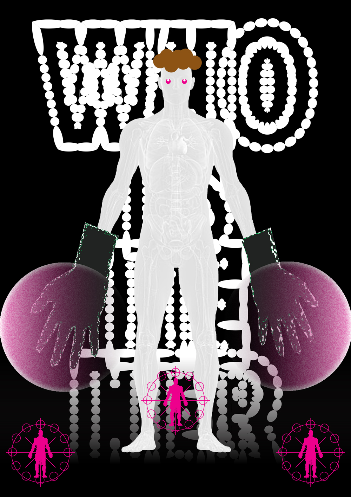
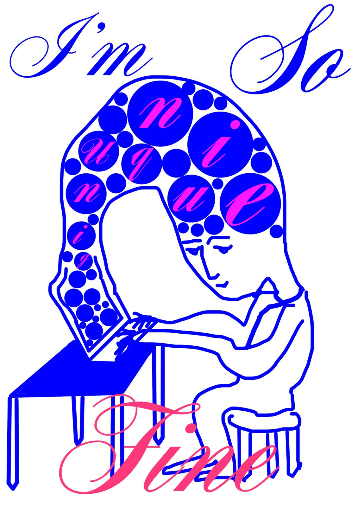
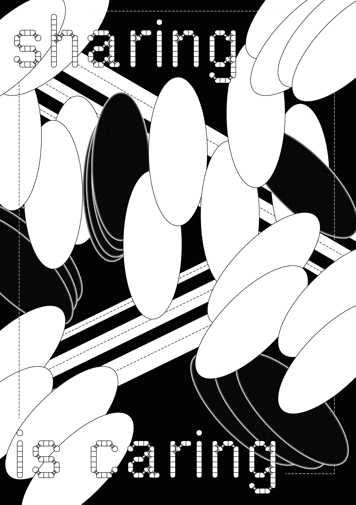
 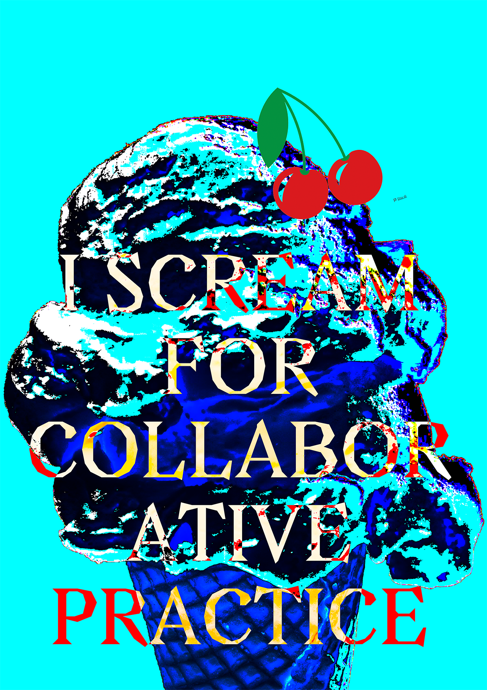
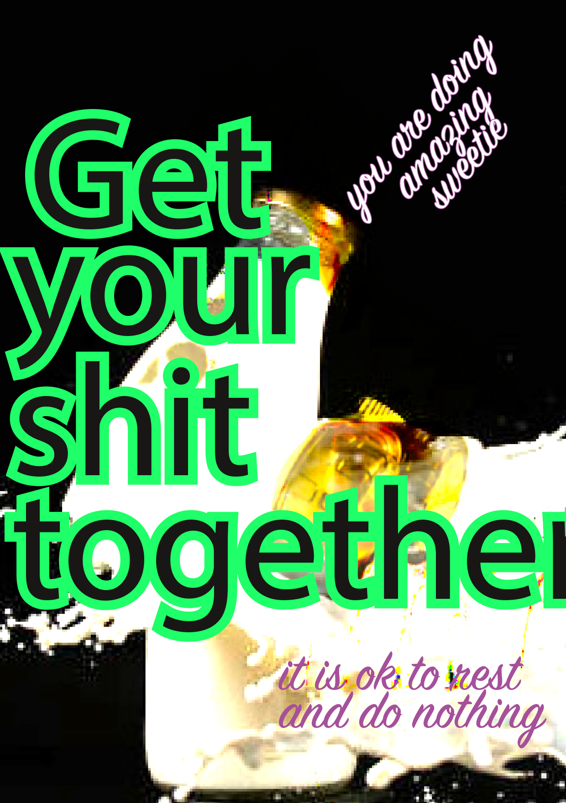
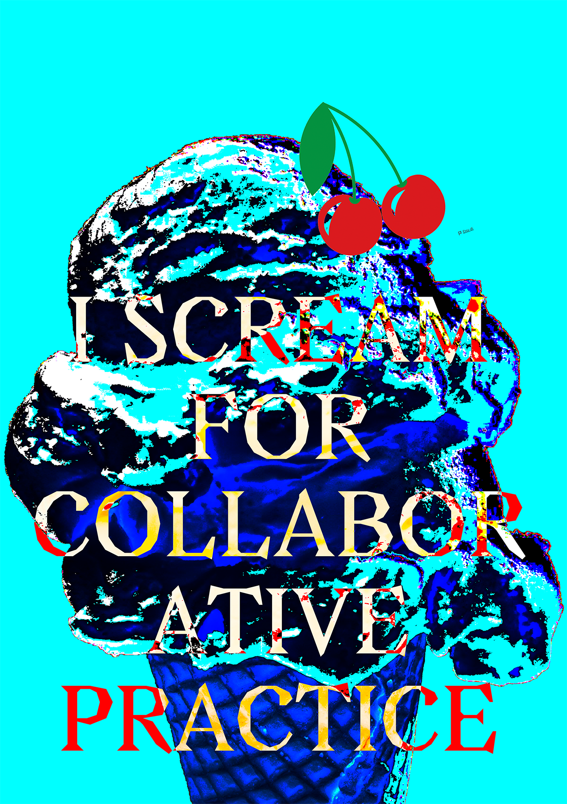
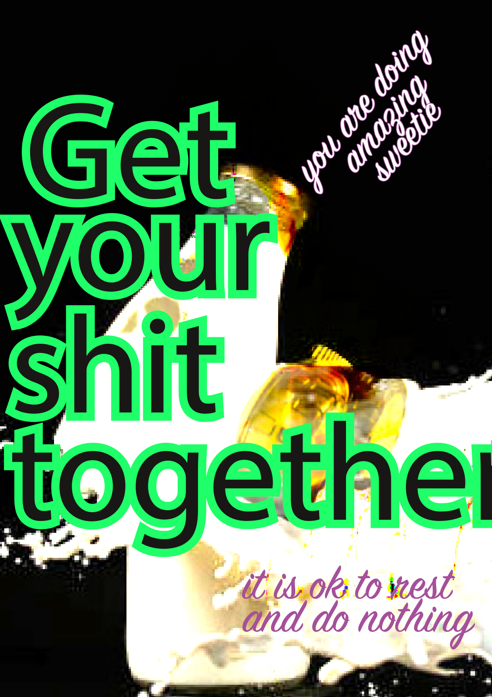
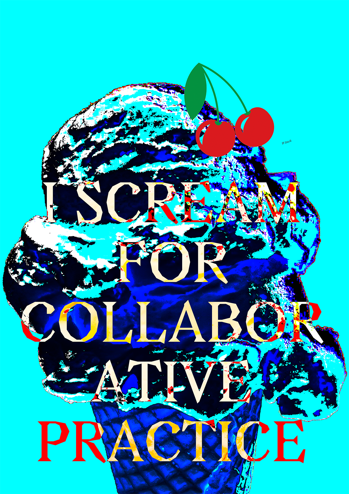
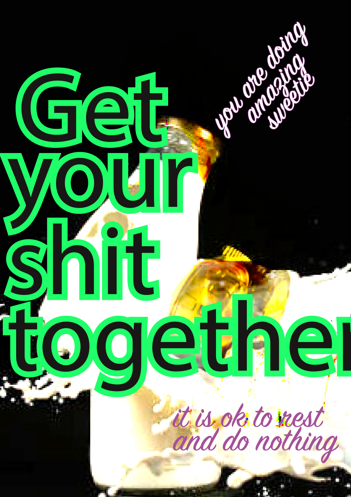
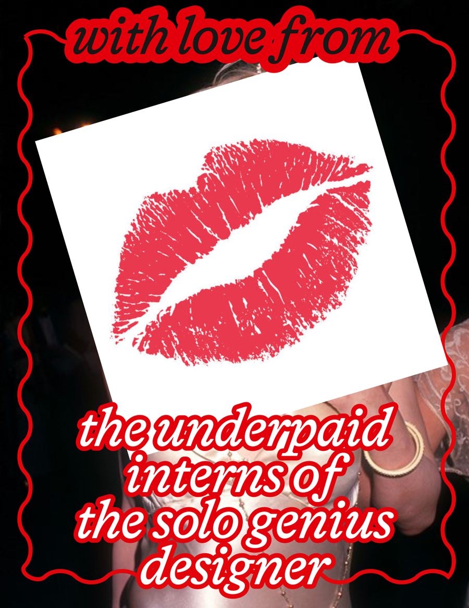
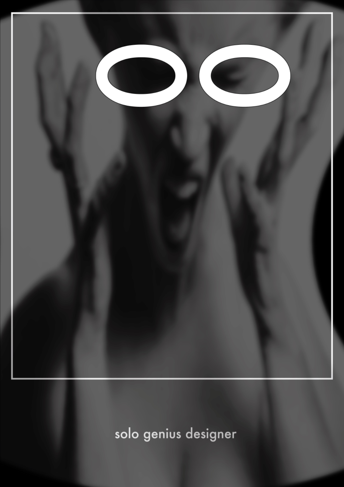
 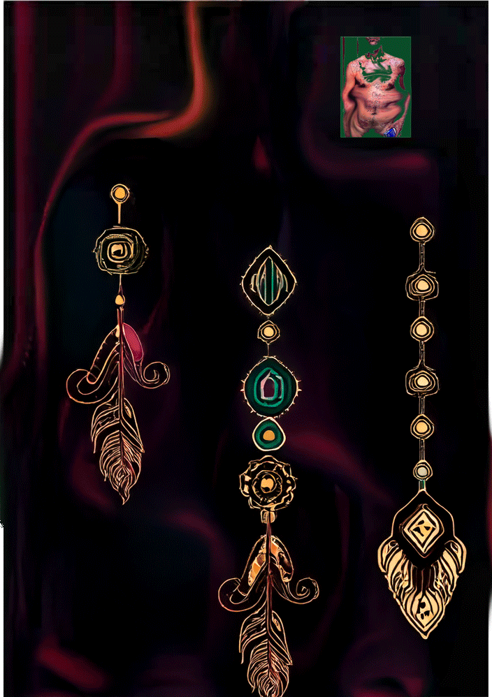
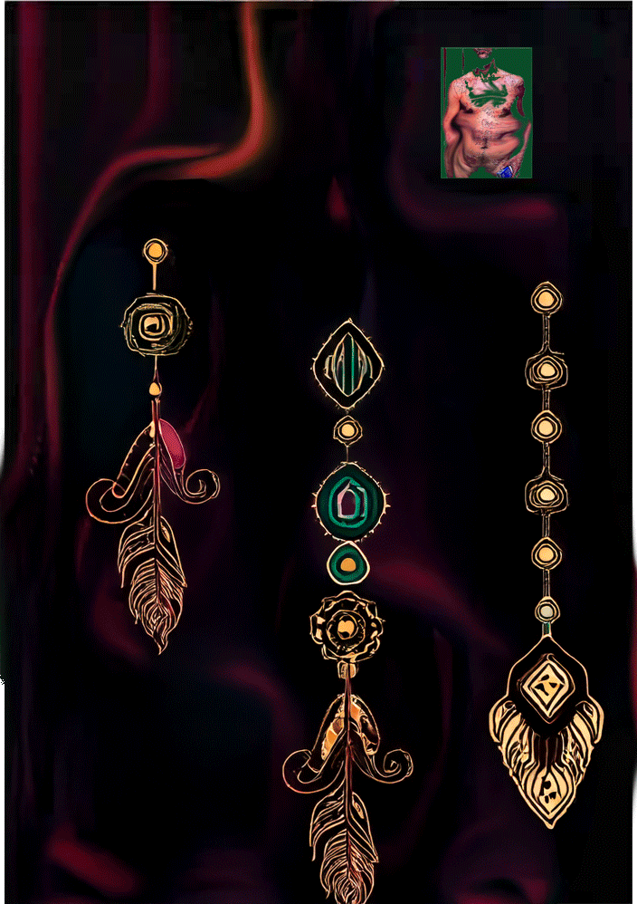


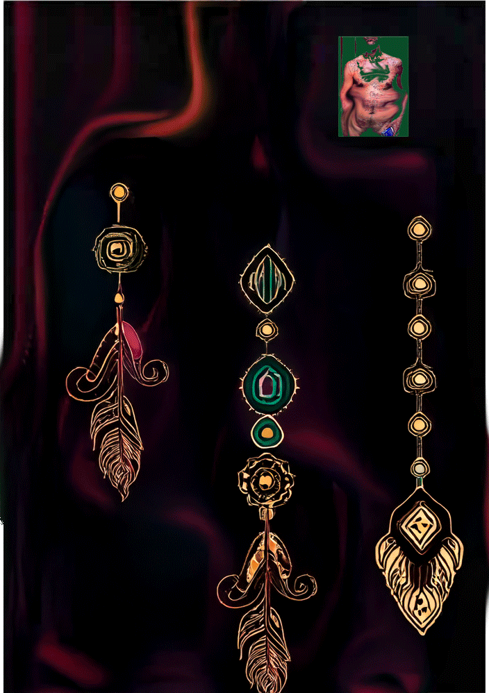